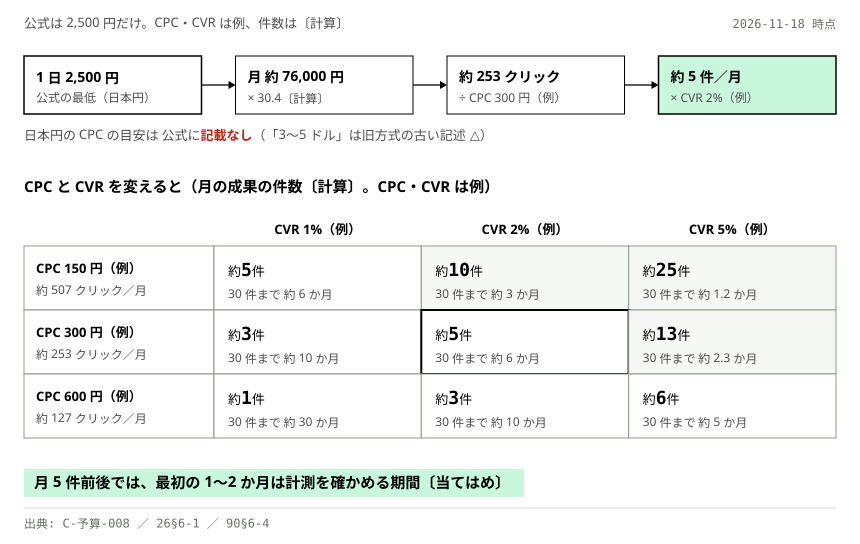

[ ChatGPT / 26 ]
26効果測定の実務（増分・実験・少額での読み方）
位置づけ: 06_計測とコンバージョン.md が「成果をどう取り、どう数えるか」、この章は「その数字で何が言えるか、広告が本当に増やしたかをどう確かめるか」。Google の知識ベースの ../Google広告の基礎/26_効果測定の実務.md（以下 G26）に当たる。
このメモについて
- 確認日: 2026-11-18（OpenAI の公式ブログ 2 本〔2026-10-05〕、ヘルプ 6 本〔計測・レポート・FAQ・コンバージョン目的・計測パートナー・よくある問題〕を Claude のアプリ内のブラウザで本文を読んだ。開発者文書〔S-01〕は curl で一括版を取得。出典の番号は
06_計測とコンバージョン.mdと同じで、S-xx は95_出どころ一覧.md、K-… - 位置づけ:
06_計測とコンバージョン.mdが「成果をどう取り、どう数えるか」、この章は「その数字で何が言えるか、広告が本当に増やしたかをどう確かめるか」。Google の知識ベースの../Google広告の基礎/26_効果測定の実務.md（以下 G26）に当たる。 - 使い方: 「ChatGPT の広告は効いたのか」「この数字で何が言えるか」と聞かれたら、まず §1 で問いを言い直し、§3 で公式の手段の有無を確かめる。確認日から 2 週間を過ぎたら §3 の出典を取り直す（増分の測定は「初期段階」と公式が書いていて、変わりやすい）
- 凡例: ✓ 公式で確認 ／ △ 資料によって食い違う ／ ? 確認できず
- 書き分け（この章では特に厳しく分ける）: 公式 OpenAI の説明 ／ 〔公式・事例〕 OpenAI が紹介したパートナーの事例（OpenAI の文書に載っているが、測ったのは第三者。一般化できない）／ 〔推測〕 書き手の推測・設計案（外部の手段の使い方は全部これ）／ 〔計算〕 書き手の計算 ／ 〔G26〕 Google の知識ベースの記述を当てはめ…
地図
本文
0.先に結論（この章で一番効く 7 点）

帰属（ピクセル・コンバージョン API と外部の帰属の会社）は今使えるが、増分は OpenAI 自身が「まだ初期段階」として Haus・Measured・WorkMagic と地域の実験を検討中で、ブランドの測定は Kantar・Cint との初期のテスト（2026-10-05 の発表）。管理画面の「コンバージョン」はラストタッチで表示後 1 日を既定で含み増分ではないので、増分を問われたら外部のパートナーか自分で組む地域の実験で答える。
出典: C-計測-009・C-計測-026・C-計測-027 ほか 7 件 · 2026-11-18 時点
- 01
Ads Manager の中に、増分を測る公式の実験（Google のコンバージョン リフトに当たるもの）は無い。 2026-11-18 時点で、リフト・ホールドアウト・地域実験の機能は ? 公式のヘルプ・開発者文書に記載なし。A/B テストの機能も ? 記載なし
- 02
OpenAI の公式の立場は「増分の取り組みはまだ初期段階。Haus・Measured・WorkMagic と地域別の実験を検討中」。ブランドの指標は Kantar・Cint と初期のテスト ✓公式本文（K-07、K-08、2026-10-05）
- 03
増分を測りたいなら、今は計測パートナー（INCRMNTAL・Fospha・WorkMagic など）か、自分で設計する実験しかない。 公式ヘルプも「パートナーによっては増分の測定に対応」と書く ✓公式本文（K-03）
- 04
管理画面の「コンバージョン」は増分ではない。 ラストタッチで、既定でビュー 1 日を含み、モデルの推定が入ることがある ✓公式本文（S-45）。公式が出した数字（「1 日のビュースルーの 52.7% が 1 時間以内」「地域の実験で増分の注文がラストクリックの 2.3 倍」など）は特定の広告主か OpenAI の集計で、自社の見込みには使えない 〔公式・事例〕
- 05
公式は「性能の基準値はまだ無い」と明言している ✓公式本文（S-33）。「ChatGPT の CPA の相場」は存在しない前提で話す
- 06
少額（1 日 2,500 円＝月 7.6 万円前後）では、増分はまず測れない。 言えるのは「計測が正しく動いているか」「台帳の申込みに ChatGPT 経由（UTM）が何件あるか」「止めたら全体が大きく減ったか」くらい〔計算〕〔推測〕
- 07
外部の手段（UTM・GA4・ホールドアウト地域・オン／オフ・事後アンケート）はどれも〔推測〕の設計。 ChatGPT の地域の指定は都道府県と郵便番号で、除外地域もある（62 #1・#2）ので、地域を分ける形は組める〔画面〕〔推測〕
1.Google（G26）との対比
Google 側の記述は G26 に合わせた（記憶で書いていない）。
| 観点 | Google 広告（G26） | ChatGPT の広告 | 運用の判断への効き方 |
|---|---|---|---|
| 増分を測る公式の実験 | コンバージョン リフト（ユーザー単位: 観測コンバージョン 1,000 件以上・予算 5,000 米ドル以上。地域単位もある）（G26 §3.3） | ? 公式のヘルプ・開発者文書に記載なし。公式ブログは「初期段階、パートナーと地域の実験を検討中」✓ 本文（K-08） | Google の「担当者に頼めばリフト調査」が、ChatGPT では「パートナーに頼むか自分で組む」になる |
| ブランドの調査 | ブランド リフト（日本は 10 日 15,000 米ドル以上）、サーチ リフト（G26 §3.1） | Kantar・Cint と初期のテスト（新しい掲載面で）✓ 本文（K-08）。広告主が申し込める形は ? | ブランドの効果を公式の数字で示す手は、今は無い |
| A と B の比較（両方とも出す） | カスタムテスト、AI Max のテストなど（G26 §3.1） | ? 公式に実験機能の記載なし。公式の助言は「大きな変更の前に十分な量を見る」「一度に複数を変えない」✓ 本文（S-01 Troubleshooting、S-37） | 広告グループやキャンペーンを分けて並べて比べるしかない（無作為の割り付けは無い）〔推測〕 |
| アトリビューション | データドリブンかラストクリック（G26 §6） | ラストタッチだけ。クリック優先。窓はレポート用（最適化は変わらない）✓ 本文（S-45 20001214） | 「どの接点に配るか」の議論は ChatGPT の中ではできない |
| MMM | Meridian（G26 §7） | ? OpenAI の MMM の道具の記載なし。Fospha などのパートナーが「フルファネル測定」✓ 本文（K-07、K-08） | MMM に入れるなら、日別の費用・表示を API か CSV で出す（§6-5） |
| 第三者の増分の事例 | Google の研究（停止の研究のメタ分析など）（G26 §2） | OpenAI が紹介したパートナーの事例 3 件（§3-3）〔公式・事例〕 | 事例は 1 社ずつの結果。母数・期間・方法の詳細は公開の本文に無い ? |
| 基準値 | 業種別のベンチマークは G26 では扱っていない | 「広告主・業種・キャンペーンの種類をまたぐ基準値はまだ無い」✓ 本文（S-33） | 比べる相手は自社の他媒体と、自社の過去だけ |
2.まず問いを言い直す（G26 §1 の型を ChatGPT に当てはめる）
| 問いの形 | ChatGPT での例 | ChatGPT で使える方法 | 章 |
|---|---|---|---|
| A と B のどちらが良いか（両方とも出す） | 文脈ヒントの書き方、画像 1 枚と複数、oCPC と oCPM、LP の差し替え | 広告グループ・キャンペーンを分けて並べる（公式の実験機能は ?）〔推測〕 | §5 |
| 広告を出したことで何件増えたか | ChatGPT の広告全体の増分 | パートナーの地域実験、自分で組む地域の実験・オン／オフ〔推測〕 | §3、§6 |
| 認知・指名が増えたか | ChatGPT に出した後、指名検索が増えたか | Google の検索語句・Search Console の指名の推移を、地域かオン／オフで比べる〔推測〕 | §6-4 |
| 手柄をどこに配るか | ChatGPT と Google 検索のどちらの手柄か | ChatGPT の中ではラストタッチだけ。媒体をまたぐ配分は外部の道具〔推測〕 | §4 |
| 期間 A と B で何が変わったか | 先月より CPA が上がった理由 | 前後比較（原因は言えない）。窓・計上日・遅れをそろえる | §6-2 |
- 〔推測〕ChatGPT で一番起きやすい失敗は、「ビュー 1 日込みの管理画面の成果」を「ChatGPT が増やした件数」として報告すること。ビュースルーは「見た人が 1 日以内に成果に至った」件数で、広告が無くても起きた成果を含む
3.公式に増分を測る手段はあるか
- リフト調査・ホールドアウト・地域実験・A/B テストの機能の記載は無い
- Haus・Measured・WorkMagic と、地域別の実験を検討
- Kantar・Cint と初期のテスト
- 増分の測定
- 増分ではない
- 2.3 倍
3-1.Ads Manager の中 ?
- 2026-11-18 に本文を読んだヘルプ（計測 20001409、レポート 20001214、計測のトラブル 20001604、FAQ 20001220、コンバージョン目的 20001412、よくある問題 20001217、基本 20001207）と開発者文書（S-01 の全節の見出しと計測・レポートの節）に、リフト調査・ホールドアウト・地域実験・A/B テストの機能の記載は無い
- ヘルプのレポートの説明は「今は表示・クリック・費用・CTR・平均 CPC・平均 CPM・コンバージョン。今後、指標・レポート・インサイトを足していく」と書く ✓ 本文（S-45 20001214）
- 「無い」と言い切れるのは「公開の文書に無い」まで。営業の担当者経由のアカウントに別の手段があるかは ?
3-2.OpenAI の公式の取り組み ✓公式本文（K-07 日本語版、K-08）
| 取り組み | 中身（2026-10-05 の発表） |
|---|---|
| 計測の基本方針 | 社内での測定とパートナーによる測定の両方に対応する。ピクセル・API の信号、アトリビューション、増分、ブランドの測定 |
| 増分 | 「増分の取り組みはまだ初期段階」。Haus・Measured・WorkMagic と、地域別の実験を検討。広告主が実験をどう組み、結果をどう読むかを一緒に学んでいる段階 |
| ブランド | 新しい掲載面の実験に合わせ、Kantar・Cint と初期のテスト（ブランドの共感の指標） |
| フルファネル・高度な測定 | Fospha・INCRMNTAL と提携 |
| クリックの先 | 「クリックだけのレポートでは取りこぼす成果がある」として、ビュー 1 日の窓と、ビューからも学ぶ最適化を用意 |
- 計測パートナーのヘルプは「パートナーによって、計測・帰属・費用のレポート・増分の測定・成果の送信に対応する」と書き、INCRMNTAL・Fospha・WorkMagic などの設定を載せる ✓ 本文（K-03）
- 日本でこれらのパートナーが使えるかは ?（公式に国の記載なし）
3-3.公式が紹介した事例〔公式・事例〕（K-07、K-08）
| 事例 | 何を測ったか | 読み方〔推測〕 |
|---|---|---|
| DV Rockerbox × WeightWatchers | アトリビューションに基づく CPA が、同社の検索広告全体の基準値より 15.3% 低い | 増分ではない（帰属の CPA の比較）。検索広告との比較の条件は ? |
| WorkMagic × Dose（ウェルネス） | 地域リフトの研究で、増分の注文がラストクリックの帰属の 2.3 倍と推定。統計的に有意なリフト、増分の購入の 67% が新しい顧客 | 公式が出した唯一の「増分」の数字。1 社・1 業種。期間・地域数・費用は ? |
| Triple Whale × Portland Leather | ChatGPT の広告経由の訪問者の 93% が新しい訪問者 | 新しさの割合で、増分ではない |
| OpenAI の初期の分析 | 深い段階の成果に最適化した世界のキャンペーンで、1 日のビュースルーの 52.7% が表示から 1 時間以内 | 「ビューが効いている」証拠ではなく、「見た後すぐ成果に至る人が多い」という分布。広告が無くても起きた分は分からない |
- ✓ 公式の事例はどれも米国の広告主の名前で、日本の事例は ? 見当たらない
- 運用の判断への効き方: 提案書で「ChatGPT の広告は増分がラストクリックの 2.3 倍」と書くと、1 社の結果を一般化したことになる。書くなら「OpenAI が紹介したパートナーの 1 事例」と明記する〔推測〕
4.管理画面の成果と増分の違い（ChatGPT の場合）
| 管理画面の「コンバージョン」に入っているもの | 根拠 | 増分の見方への影響〔推測〕 |
|---|---|---|
| クリックから 30 日（既定）以内の成果 | ✓ S-45 20001214 | 元から買う人（既存顧客・指名で探していた人）がクリックしても、全部が手柄になる |
| 表示から 1 日以内の成果（クリックが無いもの） | ✓ S-45 20001214 | 見ただけで成果に至った人。広告が無くても成果に至った人が多く混ざりうる |
| モデルの推定 | ✓ S-45 20001409 | 観測していない成果の推定。増分の推定ではない |
| ラストタッチ | ✓ S-45 20001214 | 他媒体の接点の後でも、最後が ChatGPT なら ChatGPT の手柄 |
- 〔G26〕Google の知識ベースが引く研究では、実験を使わない推定は大きくずれる（G26 §2-4）。ChatGPT でも同じ問題があると考えるのが自然〔推測〕
- 〔推測〕ChatGPT の広告に固有の「元から買う人」の混ざり方: 利用者は自分で商品を調べる会話の中で広告を見る。調べた末に、広告が無くても自然の回答や検索で同じ店にたどり着く人がいる。ここが増分を小さくする方向に働く。逆に、公式の言う「すぐ押さずに後で行動する」人は、クリックスルーに入らず、ビューの 1 日を過ぎれば管理画面に出ない。ここは管理画面が増分を取りこぼす方向に働く。どちらが大きいかは測るしかない
5.ChatGPT の中でできる比較（A と B）
5-1.公式に書かれていること ✓公式本文
- 目的・課金方式・最適化のイベントは作成後に変えられない。変えるなら新しいキャンペーン。クリック課金から表示課金へは「複製して表示を選ぶ」（S-37）
- 低配信の調べ方の最後の段: 「何をいつ変えたかを記録する。同じ範囲・同じ時間帯で、適切な間隔をあけて比べる。どの変更が効いたかを知りたいなら、一度に複数を変えない」（S-01 Troubleshooting）
- 「大きな変更の前に十分な量を見る」「まれな成果は評価しにくい」（S-37、S-01）
- 文脈ヒントは配信を保証しない（S-31、S-44）
5-2.組み方〔推測〕
| 比べたいもの | 組み方 | 注意 |
|---|---|---|
| 文脈ヒントの書き方 | 同じキャンペーンの中で広告グループを分け、ヒントだけ変える | 予算はキャンペーンの単位なので、配信が片方に寄る。表示回数の差そのものが結果の一部 |
| oCPC と oCPM | キャンペーンを複製し、課金方式だけ変える | 予算・地域・期間をそろえる。比べる成果はクリックスルーとビュースルーを分ける（06 §11-3） |
| 画像 1 枚と複数（4〜6 枚） | 広告グループの中に両方の広告を置く | 配信の配分は機械が決める。無作為ではない |
| LP の差し替え | 期間で切り替えるか、広告を 2 本にして LP だけ変える | LP を変えると審査が入る（00 §7-1）。クローラーの点検も（06 §14） |
- 〔推測〕どれも無作為の割り付けではないので、差が出ても「配信の相手が違った」可能性を消せない。Google のカスタムテスト（予算と流入を分けて割り付ける）に当たるものは無い
- 〔推測〕「クリエイティブの強化」（既定でオン）が文面を自動で変えるので、文面の比較をするならその期間はオフにする（00 §5-2、62 #10）
6.少額で何が言えるか
6-1.規模の見積もり〔計算〕

最低の 1 日の予算 2,500 円（公式）で月約 76,000 円、CPC 300 円・CVR 2%（どちらも例）なら月 5 件前後で、確定 30 件まで約半年かかる〔計算〕。最低の予算で始めるなら、最初の 1〜2 か月は成果の評価ではなく、計測の検証・CTR と CPC の水準・台帳の申込みの質を見る期間と割り切る〔当てはめ〕。
出典: C-予算-008・C-入札-009・26§6-1 ほか 3 件 · 2026-11-18 時点
日本円の最低の 1 日の予算 2,500 円 ✓（S-34、61 #6）→ 月 2,500 × 30.4 ≒ 76,000 円
仮の CPC と CVR で 1 か月の成果を出すと（どちらも仮の数字。公式の日本円の CPC の目安は無い ?。ヘルプの「3〜5 米ドルから」は旧方式の記述、94 #23）:
| 仮の CPC | クリック／月 | CVR 1% | CVR 2% | CVR 5% |
|---|---|---|---|---|
| 150 円 | 約 507 | 約 5 件 | 約 10 件 | 約 25 件 |
| 300 円 | 約 253 | 約 3 件 | 約 5 件 | 約 13 件 |
| 600 円 | 約 127 | 約 1 件 | 約 3 件 | 約 6 件 |
6-2.検出できる差の目安〔計算〕〔G26〕

月 5 件の規模では、2 倍の差でも見分けるのに約 6 か月、30% の差なら約 6 年かかり、運用の型の時間切れ 8 週のうちには何も言えない〔計算〕。少額で「文脈ヒントを変えたら CPA が 2 割下がった」とは報告せず、比べるなら差が大きいはずのもの（LP の差し替えなど）に絞るか、台帳の申込みの質を見る。
出典: 26§6-2・26§6-3・90§6-4 ほか 2 件 · 2026-11-18 時点
G26 §4.1 の近似（成果の数がポアソン分布、2 群で同じ件数、両側 5%・検出力 80%）では、1 群あたりに要る成果はおよそ「15.7 ÷（見つけたい相対の差）²」件。
| 見つけたい差 | 1 群に要る成果 | 月 5 件のアカウントを 2 群に分けたとき（1 群 月 2.5 件）にかかる期間〔計算〕 |
|---|---|---|
| 2 倍（100%） | 約 16 件 | 約 6 か月 |
| 50% | 約 63 件 | 約 2 年 |
| 30% | 約 174 件 | 約 6 年 |
読み方: 月 5 件の規模では、「A が B の 2 倍良い」くらいの差でないと、何か月かけても偶然と区別できない。「文脈ヒントを変えたら CPA が 2 割下がった」は、この規模では言えない
前後比較はさらに弱い（季節・競合・Google 側の変化を除けない）（G26 §5.1）
6-3.少額で言えること・言えないこと
| 言えること | 根拠 |
|---|---|
計測が正しく動いているか（イベントが届く、重複が無い、oppref が落ちない） | ✓ 06 §3-6・§10 の点検 |
| 台帳（CRM・注文の記録）の申込みのうち、UTM で ChatGPT の広告からと分かるものが何件あるか | 〔推測〕UTM は保たれる ✓（S-31） |
| その申込みの中身（新規か既存か、どの商品か、後の解約・成約） | 〔推測〕台帳で見る |
| クリック単価・CTR の水準（自社の他媒体と比べて） | ✓ レポートの指標。基準値は公式に無い（S-33） |
| 止めたら全体の申込みが大きく（半分など）減ったか | 〔推測〕§7-3 |
| 言えないこと | 理由 |
|---|---|
| ChatGPT の広告が何件増やしたか（増分） | 公式の実験が無く、少額では自分で組んでも力が足りない〔計算〕 |
| ビュースルーの成果が広告の効果か | 広告が無くても起きた成果を分けられない〔推測〕 |
| 文脈ヒント・画像の小さな差 | §6-2 |
| 「どんな会話で出たときに効いたか」 | 会話の話題のレポートは無い（62 #7、00 §6-4） |
| 業界平均と比べて良いか悪いか | 基準値が無い（S-33） |
6-4.少額での進め方〔推測〕
最初の 1 か月は「計測の検証」と割り切る。 成果の評価ではなく、06 §16 の点検が通ることを目標にする
報告はクリックスルーとビュースルーを分け、台帳の UTM 経由の件数を並べる。 管理画面の合計を「ChatGPT の成果」と呼ばない
ChatGPT からの申込みの質を台帳で見る（新規の割合、成約率）。量は少なくても質は見える
増分を言いたいなら、予算を「止める期間」に使う（§7-3）。少額なら止めても損は小さい
6-5.数字の取り出し〔推測〕
日別の費用・表示・クリック・成果を CSV（日別の値）か API で毎月書き出す。時間別と商品は約 30 日で消える ✓（S-01）
書き出す成果は、ビュー 0 日とビュー 1 日の 2 通り、計上日は「広告に触れた日」と「成果の日」の 2 通りを決めておく（06 §11）
API で取るときは窓と時刻の基準を明示する（省略すると既定の「クリック 30 日＋ビュー 1 日＋広告に触れた日」）✓（S-01 Reporting）
7.外部の手段で何ができるか（すべて〔推測〕）
- 書き手の設計案
- 止めた後もビュースルーの 1 日とクリックの 30 日の窓の中の成果が管理画面に出続ける
ここから先は、公式に書かれた機能ではなく、書き手の設計案。公式の事実は各行の「使う公式の機能」の欄だけ。
7-1.一覧
| 手段 | 何が分かるか | 使う公式の機能（✓） | 限界〔推測〕 |
|---|---|---|---|
| UTM ＋ GA4 | ChatGPT の広告から来たセッションと、その後の行動（GA4 の成果） | UTM は保たれる ✓（S-31）。置き換え {campaign_id} など ✓（S-45） | 帰属であって増分ではない。審査のクローラーの訪問が混ざる ✓（S-31）。同意・ブロックで欠ける |
| GA4 の接続（ベータ） | Ads Manager と GA4 の帰属の差の比較 | 担当者経由のベータ ✓（K-02） | 取り込むのはプロパティ全体の集計で、キャンペーンの成果ではない ✓（K-02） |
| 台帳（CRM・注文） | 申込みの総数と、UTM で分かる ChatGPT 経由の数 | — | UTM が落ちた申込みは「直接」などに混ざる |
| ホールドアウト地域 | 出した地域と出さない地域の申込みの差（増分の推定） | 都道府県と郵便番号で指定・除外できる〔画面〕（62 #1・#2） | 地域の判定の方法（IP か位置か）は ?。人の移動で混ざる。少額では力が足りない |
| オン／オフ（期間で止める） | 止めたときの申込みの総数の変化 | 一時停止・再開 ✓（S-01） | 季節・他媒体の変化と区別しにくい |
| 事後アンケート（「何で知ったか」） | ChatGPT の広告を覚えている人の割合 | — | 記憶の偏り。自然の回答と広告を利用者が区別できない |
| 指名検索の推移 | ChatGPT に出した後、Google の指名検索が増えたか | — | 他の要因が多い。地域かオン／オフと組み合わせないと読めない |
| 計測パートナー（INCRMNTAL・Fospha・WorkMagic など） | パートナーの方法での増分・MMM | 公式の連携 ✓（K-03） | 日本での提供・費用・最低規模は ? |
7-2.ホールドアウト地域の組み方〔推測〕〔G26〕
G26 §4.1 の手順を ChatGPT に当てはめる。
| 手順 | ChatGPT での当てはめ |
|---|---|
| 1. 単位 | 都道府県（「地域」）。市の単位は画面で出なかった（62 #1）。郵便番号を並べて市に近い単位も作れるが、手間が大きい |
| 2. 群の分け方 | 人が行き来する隣どうし（首都圏の 1 都 3 県など）は同じ群に入れる（G26 §4.1 の考え方） |
| 3. 事前のデータ | 台帳の「地域 × 日の申込み数」を、テスト期間の 3 倍以上の長さで（G26 §4.1 の Google の目安を借りる） |
| 4. 配信の設定 | 出さない群を「除外地域」に入れる〔画面: 除外地域の欄がある 62 #2〕。新しいセルフサーブのアカウントは自国にしか出せない場合がある（S-34）が、国の中の地域の話なので影響しない |
| 5. 期間 | 購入までの周期を 1 回以上含める。止めた後に遅れて届く成果の期間を置く |
| 6. 分析 | 出した群と出さない群の差を、事前の差で補正する（差分の差分。G26 §4.3） |
| 7. 規模の確認 | §6-2 の表で、期間中に 1 群あたり何件の成果が要るかを先に出す。足りなければ実施しない |
- 〔推測〕ChatGPT の広告の利用者は、無料版と Go のログインした成人（と、全年齢向けの広告だけはログインしていない人）（00 §8）。地域の差のほかに、ChatGPT の利用率の地域差が群の差に入る
- 〔推測〕他媒体（Google・Meta）の配信は両方の群で変えない。変えると何の差か分からなくなる
7-3.オン／オフの組み方〔推測〕〔G26〕
- G26 §5.2 の型: オン 2 週・オフ 2 週・オン 2 週のように繰り返すと、季節の影響と区別しやすい
- ChatGPT に固有の注意:
- 止めた後もビュースルーの 1 日とクリックの 30 日の窓の中の成果が管理画面に出続ける（窓の仕様から読める）。止めた期間の評価は管理画面ではなく台帳で
- 学習の期間の定義は ? 公式に記載なし（00 §0）。止めて再開したときに配信がどう戻るかは分からない。オフの期間は成果の周期より長くする
- 新しいキャンペーンは、明確な理由が無ければ配信の確認に 24 時間待つ ✓（K-06）。再開の直後の数日は除いて読む
- 見る指標: 台帳の申込みの総数（ChatGPT 経由に限らない）。UTM の ChatGPT 経由の件数だけを見ると、止めれば 0 になるのは当たり前で、何も分からない
7-4.UTM と GA4 で見るときの設計〔推測〕
- UTM の例（公式の例を元に）:
utm_source=openai&utm_medium=paid&utm_campaign={campaign_id}&utm_content={ad_id}✓（S-01 の例）。utm_campaignを ID にすると GA4 で名前が読めないので、キャンペーン名を手で入れる案もある〔推測〕 - 広告を入稿・修正した日は、審査のクローラーの訪問が UTM 付きで来る ✓（S-31）。その日の流入は割り引く。〔推測〕サーバーのログで UA
OAI-AdsBotを数えて引く - GA4 の成果と Ads Manager の成果は、窓（GA4 のルックバック期間と ChatGPT の 30 日＋1 日）、計上日、ビュー、モデル化で違う（06 §13）。差を「どちらかが間違い」とは読まない ✓（S-45 20001409「差は必ずしもエラーではない」）
8.報告での伝え方〔推測〕
8-1.何が言えて何が言えないかの書き方
| 書いてよい | 書かない |
|---|---|
| 「ChatGPT の広告に帰属した成果は X 件（クリック 30 日、ビュー 1 日、うちビュー Y 件）」 | 「ChatGPT の広告で X 件増えた」 |
| 「台帳の申込みのうち UTM で ChatGPT 経由と分かるのは Z 件」 | 「ChatGPT 経由は Z 件だけ」（UTM が落ちた分がある） |
| 「OpenAI が紹介したパートナーの 1 事例では、増分がラストクリックの 2.3 倍と推定された」 | 「ChatGPT の広告は増分がラストクリックの 2.3 倍」 |
| 「公式に業界の基準値は無い」 | 「業界平均より良い」 |
| 「この規模では 2 倍未満の差は見分けられない」 | 「文脈ヒントの改善で CPA が 2 割改善」 |
8-2.報告の型
- 1
計測の状態（イベントが届いているか、EQS の主な警告、計測の変更日）
- 2
配信と費用（表示・クリック・費用・CPC。費用は 7〜8 時間遅れ、成果は 24〜48 時間遅れの注記）
- 3
帰属した成果（クリックスルーとビュースルーを分けて）
- 4
台帳との突き合わせ（UTM の件数、申込みの質）
- 5
言えないこと（増分、会話の中身、基準値）
- 6
次に確かめること（地域の実験・オン／オフをするか、規模が足りるか）
9.細かいルール一覧
| # | 項目 | 区分 | 値・中身 | 印 | 出典 |
|---|---|---|---|---|---|
| 1 | Ads Manager の増分の実験（リフト・ホールドアウト） | できない（記載なし） | 公開のヘルプ・開発者文書に無い | ? | S-45、S-33、S-01 |
| 2 | A/B テストの機能 | できない（記載なし） | 公開の文書に無い | ? | S-01、S-37 |
| 3 | 増分の公式の取り組み | 中身 | 初期段階。Haus・Measured・WorkMagic と地域の実験を検討 | ✓ | K-07、K-08 |
| 4 | ブランドの測定 | 中身 | Kantar・Cint と初期のテスト | ✓ | K-08 |
| 5 | 増分に対応する計測パートナー | できる | パートナーによる（INCRMNTAL・Fospha など） | ✓ | K-03、K-07 |
| 6 | 性能の基準値 | できない | まだ無い | ✓ | S-33 |
| 7 | アトリビューション | 中身 | ラストタッチ、クリック優先、マルチタッチではない | ✓ | S-45 20001214 |
| 8 | 窓の変更 | 条件 | レポートだけ。最適化・入札・課金は変わらない | ✓ | S-45 20001214、K-08 |
| 9 | 管理画面のコンバージョン | 中身 | ビュー 1 日込み（既定）、モデルの推定が入ることがある | ✓ | S-45 20001214・20001409 |
| 10 | 目的・課金・イベントの変更 | できない | 作成後は不可。新しいキャンペーンか複製 | ✓ | S-37、S-01 |
| 11 | 地域の指定・除外 | できる | 都道府県・郵便番号。除外地域あり | 〔画面〕 | 62 #1・#2 |
| 12 | 最低の 1 日の予算（円） | 上限（下限） | 2,500 円 | ✓ | S-34 |
| 13 | 時間別・商品のレポート | 期限 | 約 30 日 | ✓ | S-01 |
| 14 | 日別以上の配信のレポート | 期限 | 365 日 | ✓ | S-01 |
| 15 | 成果の反映 | 期限 | 24〜48 時間 | ✓ | S-45 20001214 |
| 16 | 新しいキャンペーンの配信の確認 | 期限 | 理由が無ければ 24 時間待つ | ✓ | K-06 |
| 17 | 変更の比べ方 | 条件 | 変えたことと日時を記録、同じ範囲・時間帯、一度に複数を変えない | ✓ | S-01 Troubleshooting |
10.よくある思い込みと実際
思い込みGoogle のようにリフト調査を頼める
実際Ads Manager に記載なし。公式は「初期段階、パートナーと地域の実験を検討中」
印と出典: ?／✓ K-08 ／ 効く場面: 提案
思い込み管理画面のコンバージョン＝ChatGPT が増やした数
実際ラストタッチ、ビュー 1 日込み、推定込み。増分ではない
印と出典: ✓ S-45 ／ 効く場面: 報告
思い込みビュースルーは広告の効果の証拠
実際「見た後 1 日以内に成果に至った」件数で、広告が無くても起きた成果を含みうる
印と出典: 〔推測〕（窓の定義は ✓ S-45） ／ 効く場面: 報告
思い込み公式の事例（2.3 倍、15.3% など）は相場
実際1 社ずつの第三者の結果。基準値は無い
印と出典: 〔公式・事例〕K-08、✓ S-33 ／ 効く場面: 提案書
思い込み窓を長くすれば効果が大きくなる
実際見え方が変わるだけで、配信も成果も変わらない
印と出典: ✓ S-45 20001214 ／ 効く場面: 報告の設定
思い込み少額でも 1 か月回せば効いたか分かる
実際月数件では 2 倍未満の差は見分けられない
印と出典: 〔計算〕 ／ 効く場面: 少額の検証
思い込み止めて UTM の流入が 0 になった＝効いていた
実際止めれば 0 になるのは当然。見るのは台帳の総数
印と出典: 〔推測〕 ／ 効く場面: オン／オフ
思い込み文脈ヒントを分ければ A/B テストになる
実際割り付けは無作為ではない。配信の相手が違いうる
印と出典: 〔推測〕 ／ 効く場面: 比較の設計
11.取得できなかった・確認できなかった項目 ?
| 項目 | 状況 | 次にすること |
|---|---|---|
| 営業の担当者経由のアカウントでの増分の手段 | 公開の文書に無い | 担当者に聞く |
| Haus・Measured・WorkMagic の地域実験の条件（最低規模・国・費用） | 公式は「検討中」とだけ | 各社の公開資料（第三者）、OpenAI の続報 |
| 日本での計測パートナーの提供 | 公式に国の記載なし | 各社の資料 |
| 地域の判定の方法（IP か位置情報か） | 公式に記載なし | ヘルプ・開発者文書の更新 |
| 止めて再開したときの学習・配信の戻り方 | 学習の定義が公式に無い | ヘルプの更新 |
| 公式の事例の詳細（期間・地域数・費用・方法） | 公開の本文に無い | パートナー各社の事例ページ（第三者） |
| Kantar・Cint のブランドの測定に広告主が申し込めるか | 「初期のテスト」とだけ | 続報 |
| MMM 用の公式のデータの出し方 | API と CSV はある。MMM 向けの案内は無い | — |
出典一覧
すべて 2026-11-18 に確認。番号の中身は 06_計測とコンバージョン.md の出典一覧と同じ。
Google 側: ../Google広告の基礎/26_効果測定の実務.md §1・§2・§3.1・§3.3・§4.1・§4.3・§5.1・§5.2
変更の記録
- 2026-11-18 初版
[ 元 ] ChatGPT広告の基礎/26_効果測定の実務.md